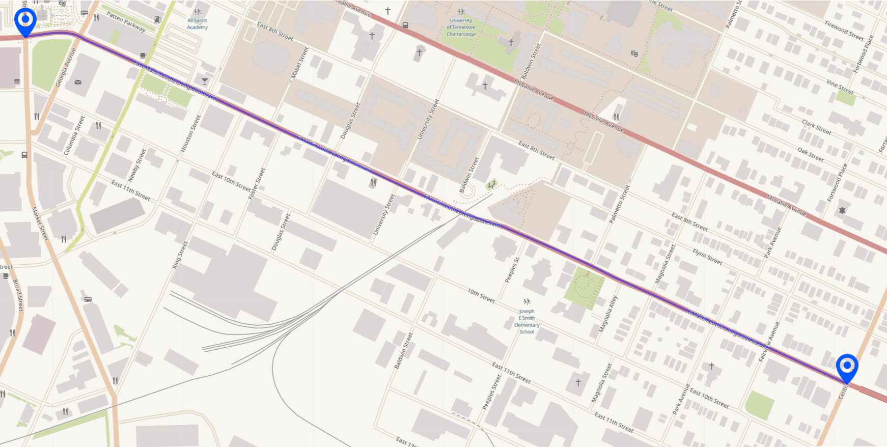

This page serves as a platform to show the progress made on the MLK Smart Corridor.
The initial testbed was implemented by the Center of Urban Informatics and Progress
(
UTC's CUIP),
founded by Dr. Mina Sartipi. This center aims to serve as a nexus of research and
innovation at the University of Tennessee at Chattanooga.
The testbed spans over a mile of Downtown Chattanooga's Martin Luther King Boulvard,
starting at the intersection of MLK and Market Street and ending at the intersection of MLK
and Central Avenue. It includes 16 poles, each of which includes a wide array of sensors including
air quality, cameras, LiDAR, RADAR and audio. Additionally, there are networking capabilities such
as SDR, DSRC, 802.11AC and 802.11AD (more shown on the
Features page).

This site's features can be accessed via the menu. Currently implemented are:
- Vehicle and Object Tracking with YOLO v3
- Air Quality Analysis using PurpleAir
More features to be implemented in the future!